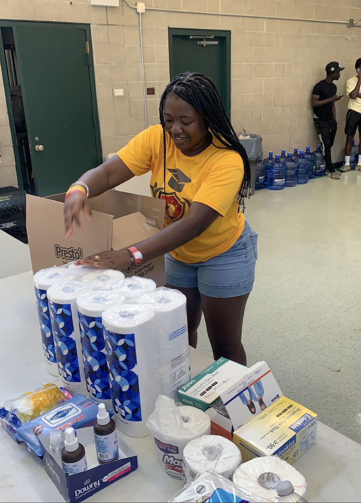
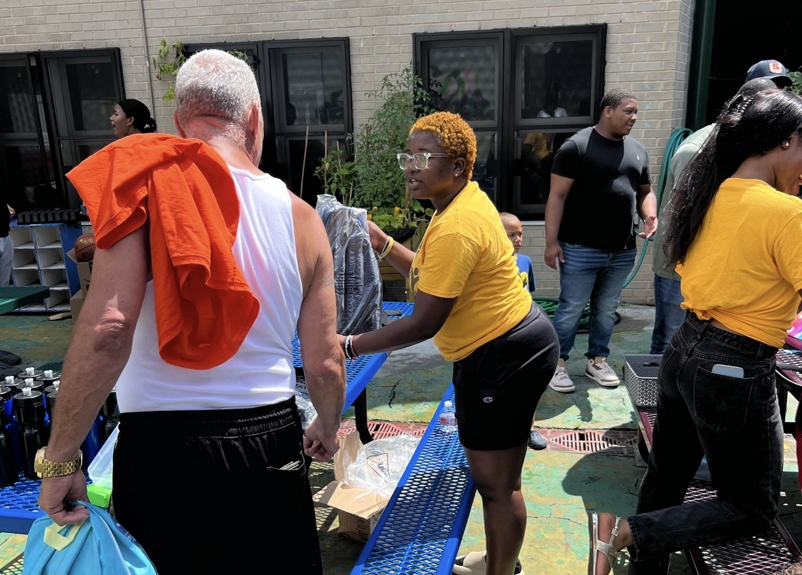
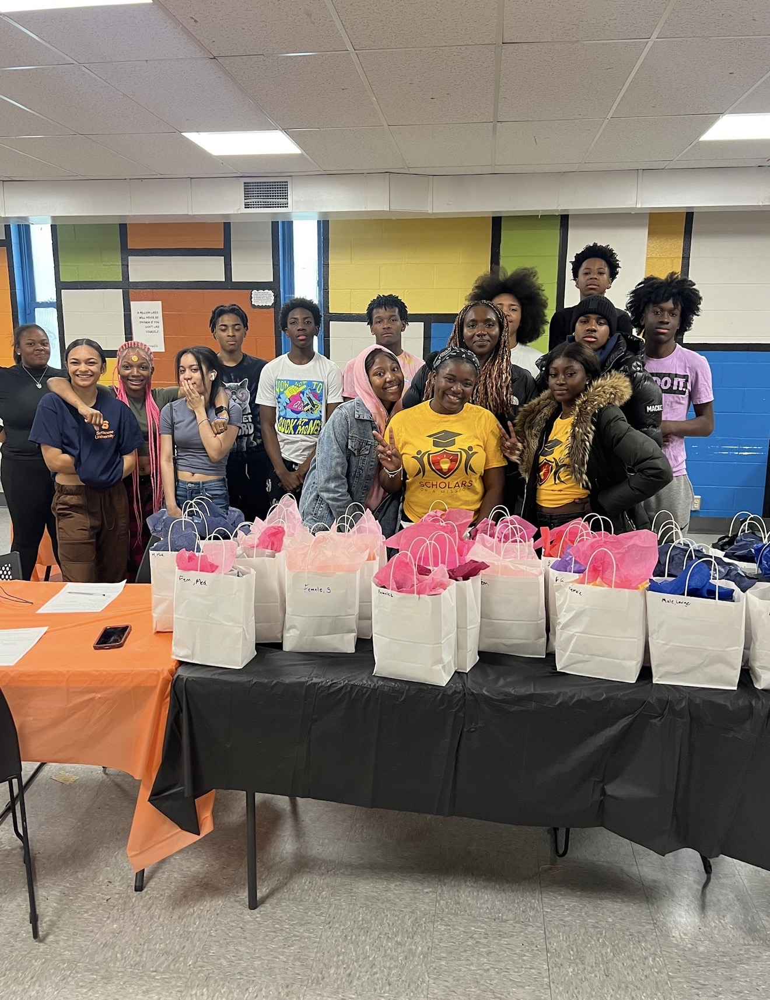
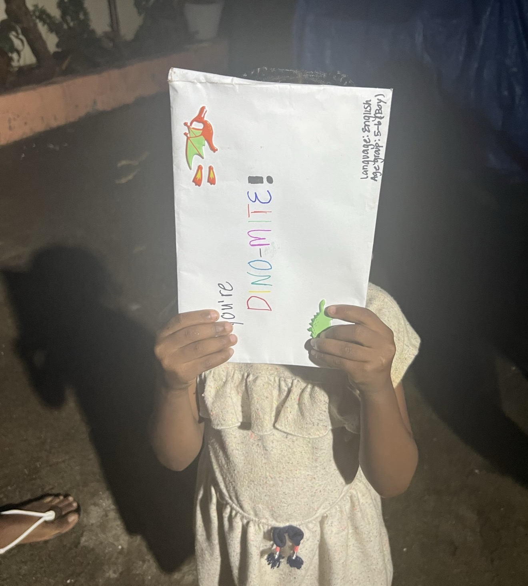
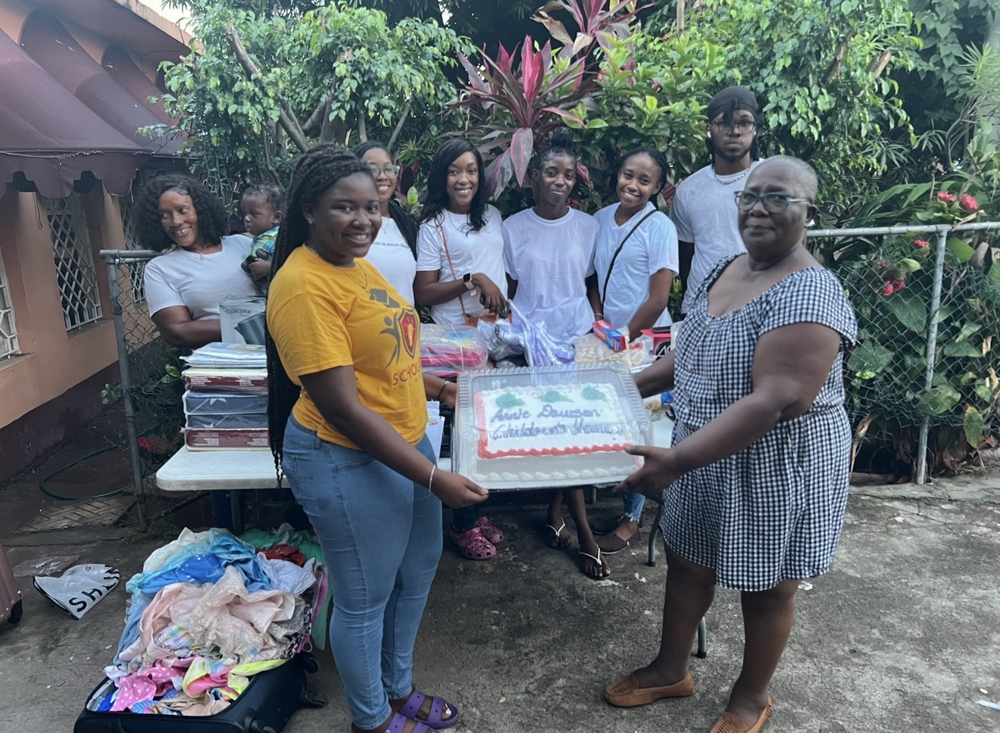
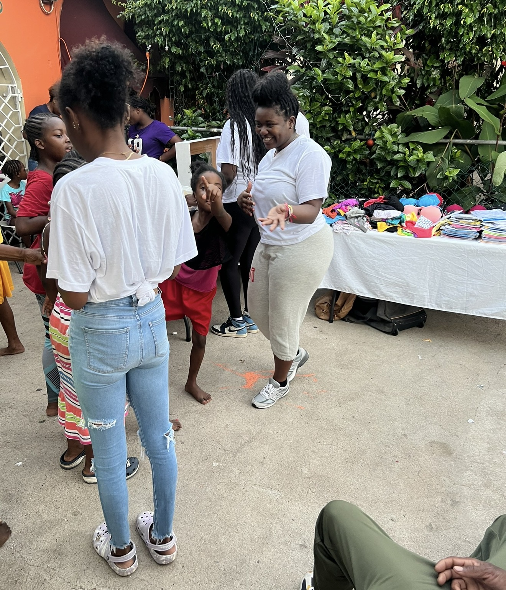
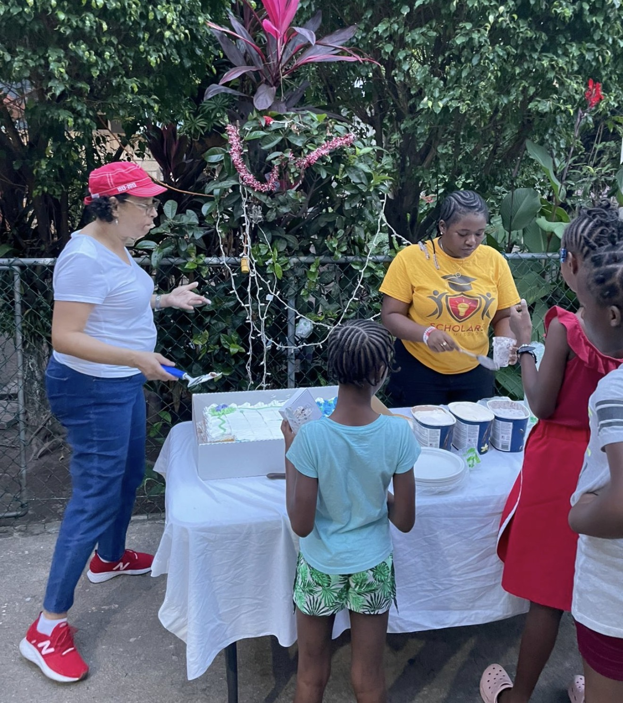
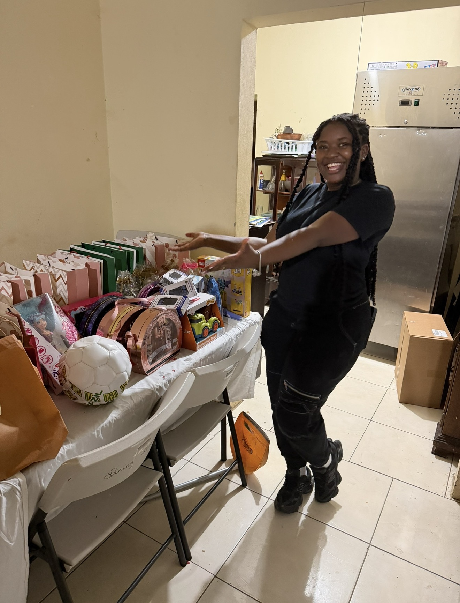
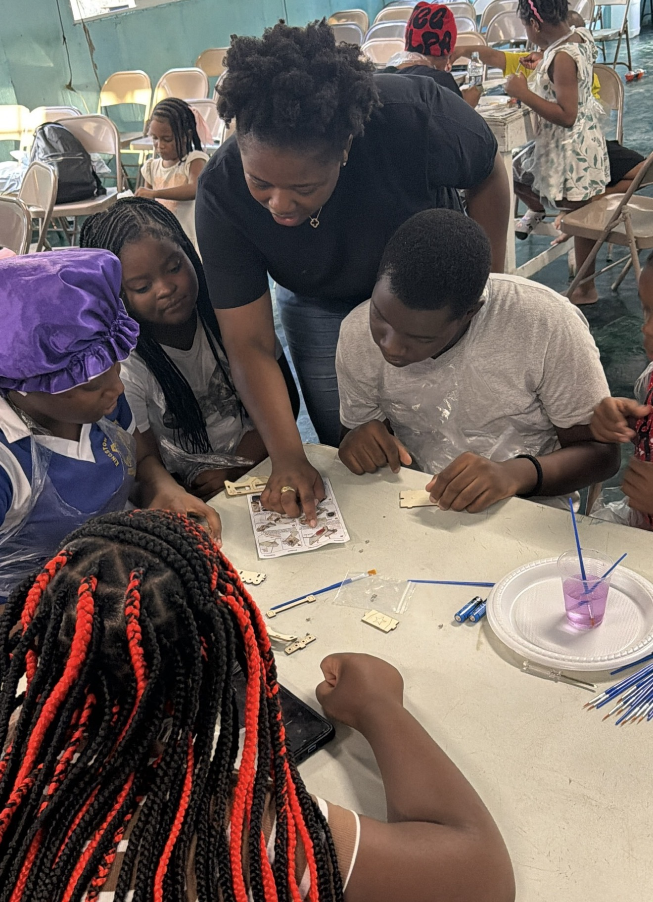

Engineer. Researcher. Innovator.
Brianna
Gillfillian
Leveraging engineering and technology to design solutions and experiences that advance education, innovation, and meaningful community impact.
Learn more ↓
Scroll
Engineer. Researcher. Innovator.
Leveraging engineering and technology to design solutions and experiences that advance education, innovation, and meaningful community impact.
Learn more ↓I am a PhD student in Computer and Information Science and Engineering at Syracuse University, with a background in Computer Science and Engineering Management. My work focuses on optimizing systems through operations research, with a strong interest in how technology can improve real-world outcomes.
I am deeply passionate about teaching and creating accessible learning experiences. I enjoy breaking down complex ideas into something people can connect with and building environments where students feel confident exploring STEM.
As a first-generation college student from Kingston, Jamaica, my journey shapes how I approach my work. I founded STEAMfluence to provide hands-on STEM opportunities for underserved communities, turning a student initiative into a growing platform for impact.
— Henry Wadsworth Longfellow
"The heights by great men reached and kept were not attained by sudden flight, but they, while their companions slept, were toiling upward in the night."
Through Scholars on a Mission and STEAMfluence, I have organized and led community events across New York City, Syracuse and Jamaica — from giving back to local youth to bringing STEAM education to underserved communities back home.

Collaborated with SU student organizations to provide school supplies and essentials to students in the New York City community.

Returned for a second year of back-to-school giving, expanding our reach across the Syracuse community in partnership with SU organizations.

Partnered with the Boys and Girls Club of Syracuse to present teens with hygiene products and personal care essentials in thoughtfully packed care packages.

Organized a holiday pen pal initiative connecting students with children across Africa and the Caribbean — this little one proudly shows off her pen pal envelope.

Brought cake, ice cream, holiday gifts, fun activities, and hair braiding to the children at Annie Dawson Children's Home in Jamaica to ring in the New Year.

Continued the annual New Year Treat tradition — bringing gifts, activities, cake, ice cream, and celebration to children in Jamaica in collaboration with the Kappa Lambda Chapter of Delta Sigma Theta Sorority, Inc.

Another year, another celebration. Treats, activities, hair braiding, and gifts for the girls — as every child deserves to feel seen and celebrated. We did a small goal setting workshop to set the tone for the new year.

Now under the STEAMfluence banner, the New Year Treat continues. We prepared gift bags and brought joy to children as the tradition grows into something permanent. We incorporated STEAM activities such as painting on canvas and making lipgloss from scratch.

Led hands-on STEAM workshops at Christian Outreach Mission Evangelism (team building, small STEM projects & painting) and at Hebron House Teen Pregnancy Centre (self-care & STEAM day — girls made their own lip balms, bath bombs, and soaps).
Founded STEAMfluence, a STEAM summer program for students of color and underserved communities. Built on the foundation of Scholars on a Mission, STEAMfluence received the $5,000 Orange Innovation Fund grant from Syracuse University and was featured as an "Innovator in Action."
Engineered a scalable AI log-analysis pipeline at IBM Silicon Valley Lab using Granite and Llama models with LangGraph integrations. Deployed a multi-agent framework with IBM WatsonX Orchestrate ADK to fine-tune and consistently structure output across log files.
Founded and led Scholars on a Mission at Syracuse University — a student organization coordinating community service projects and mentorship programs among members of the Caribbean and African diaspora. Served as the foundation for STEAMfluence.
Designed and implemented UI pages for a gaming application and developed a static web app using React, HTML, and CSS during an internship at The Tech Garden in Syracuse.
Engineered a scalable AI log-analysis pipeline using Granite and Llama models with LangGraph integrations. Deployed a multi-agent framework with IBM WatsonX Orchestrate ADK across dev environments.
Pursuing a PhD in Computer and Information Science and Engineering with a 4.0 GPA, focusing on optimizing delivery fleet routing and logistics. GEM Scholar, IBM Fellow, and WISE Fellow.
Developed an events management application using QuickBase and built a SharePoint website for Cultural Programs.
Contributed to system architecture design and analysis across two summers, and delivered cybersecurity solutions to strengthen AIG's assets and stakeholder protections.
For a full overview of my academic and professional background —
Download My Résumé ↓Whether you're a researcher, collaborator, or someone whose work and/or interests intersects with mine — I'd love to hear from you.